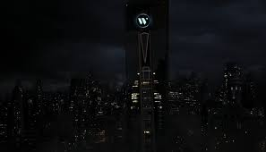

The Batman

Bio
Batman, the alter ego of Bruce Wayne, is a vigilante hero dedicated to protecting Gotham City from crime and corruption. Orphaned as a child after witnessing the tragic murder of his parents, Bruce vowed to fight injustice and trained to physical and intellectual perfection. Equipped with a genius-level intellect, martial arts mastery, and an array of high-tech gadgets, Batman operates from the Batcave, using the iconic Bat-Signal as a call to action.By day, Bruce Wayne is a billionaire philanthropist and CEO of Wayne Enterprises, but by night, he transforms into the Dark Knight. With the help of allies like Alfred Pennyworth, Commissioner Gordon, and the Bat-Family, Batman takes on notorious villains such as the Joker, Two-Face, and the Riddler. Fueled by his relentless drive and moral code, he remains one of the world’s greatest heroes, symbolizing justice, resilience, and the enduring power of the human spirit.
Wayne Enterprise
Bruce Wayne, CEO of Wayne Enterprises, has long been a prominent figure in Gotham's social and financial circles. Known for his lavish lifestyle and philanthropy, many find it hard to reconcile his public persona with that of the stealthy, combat-savvy vigilante. However, skeptics point to Wayne’s extensive resources, his family's tragic history, and his frequent absences during high-profile crises as evidence of a double life. Adding fuel to the fire, leaked documents reveal substantial investments by Wayne Enterprises into advanced technology eerily similar to the gadgets the Masked Vigilante wields.
Combat

Batman’s combat style is a masterful blend of martial arts disciplines and tactical precision, honed through years of rigorous training and relentless dedication. Drawing from over 127 martial arts, including Krav Maga, Jiu-Jitsu, Muay Thai, Boxing, and Eskrima, his fighting prowess is unparalleled. Batman adapts seamlessly to any situation, combining the raw power of striking with the finesse of grappling and joint manipulation. His combat is not just physical but deeply cerebral; he analyzes his opponent’s strengths and weaknesses in real-time, using strategy to outmaneuver even the most formidable foes. His movements are efficient and deliberate, minimizing wasted effort while maximizing impact.
A hallmark of Batman’s combat style is his use of the environment and gadgets to gain an advantage. Whether in the shadows of Gotham’s alleys or on the rooftops of skyscrapers, he turns his surroundings into tools for victory. His utility belt houses a range of weapons like Batarangs, smoke pellets, and grappling hooks, which he integrates seamlessly into his fighting techniques. Batman’s ability to blend stealth, acrobatics, and sheer physical dominance allows him to take on multiple adversaries simultaneously, often overwhelming them before they can react. His combat style embodies discipline, adaptability, and a relentless drive to protect Gotham City at all costs.

Recent sightings of the masked vigilante
- Gotham Subway
- Station Stop 12
- Gotham Police Department
- Baskin Robins
- Gotham Tower
- Constuction Site
- Not wearing hockey pads

What kind of tools does "The Batman" frequently use?
Back to top